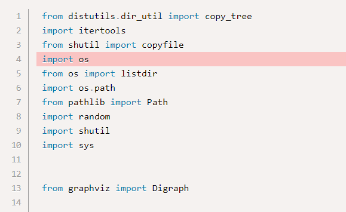

הגשתי עכשיו את הפרויקט wit, ועכשיו אני מתקן את ההערות שקיבלתי.
הערה ראשונה נוגעת למודולים שייבאתי. הבודק האוטומטי מעיר לי שהמודול OS נמצא בסדר הלא נכון ביחס לשאר המודולים. סידרתי אותם לפי אלפבית, השתמשתי באופטימיזציה של פאיצ’רם - אבל הבודק עדיין מעיר שיש בעיה בסדר.

הבעיה השנייה קשורה לקוד עצמו. במהלך הפרויקט, השתמשתי המון פעמים בקטע הבא:
‘’‘for path, subdirs, files in os.walk(dst):’’’
הבודק האוטומטי מעיר לי שהגדרתי משתנים בלולאה ולא השתמשתי בהם. באמת השתמשתי רק ב-files, אבל המשתנים האחרים משמשים ל-unpacking, ואם לא אגדיר אותם הקוד לא יעבוד.
אלה השגיאות היחידות שעלו בבדיקת הבודק האוטומטי. אשמח לדעת אם הקוד שלי ייבדק.
הערה אחרונה - זה קורס מטורף. החומר מועבר בצורה מעולה, ובזכות זה צברתי כמויות של ידע. תודה!
eyalmerav
אתה מייבא 3 פעמים את os…
לא ככה עושים את זה…
Yam
תעביר את os שורה אחת קדימה, לדעתי.
הקונבנציה להגיד שאתה לא הולך להשתמש במשתנה בתוך מבנה מסוים היא לכתוב בתחילת השם שלו _.
לייק 1
efratush
לגבי הערה על הwalk. משתנה שאתה לא צריך להשתמש בו, במקום שם למשתנה תכתוב את התו- קו תחתון.
לייק 1
ronlevy120
תודה על ההערה בנוגע לשינוי המשתנה ל-_, זה עזר.
לגבי ההערה על סידור המודולים - הסרתי את המודול OS, ועשיתי אופטימיזציה של פאיצ’רם לסידור המודולים. עדיין מקבל שגיאה. איך לתקן את זה?
לא מכיר את האופטימיזציה של פאיצ’ארם, בכל מקרה זו אחריותך לוודא את תקינות הסדר.
דובר כאן (וגם במחברות) רבות על אופן סידור האימפורטים. צריך לסדר אותם בסדר אלפביתי על פי שמותיהם, ואם מתבצע יבוא מתוך מודולים (באמצעות from module או module.x) יש לסדר את מה שמיובא מתוכם על פי סדר אלפביתי גם כן.
בנוסף הייבואים שהצגת נראים מבלבלים מאוד, הייתי ממליץ להמנע מייבוא ישיר של כל כך הרבה פונקציות שונות עם שמות דומים, במיוחד כשמייבאים גם את המודולים בשלמותם, זה מאוד פוגע בקריאות הקוד.
לייק 1
eliory09
בקשר לסידור האוטומטי - זה כלי מעולה, אבל המערכת מכוונת לסידור אלפבתי בהתחשב בשם המודול בלבד, מה שיוצר עירוב של from ו-import, כמו גם בסידור של מודולים מובנים וצד שלישי בהפרש שורה ריקה.
הסידור של הסביבות עושה סדר קצת שונה לפעמים.

{kind=link}